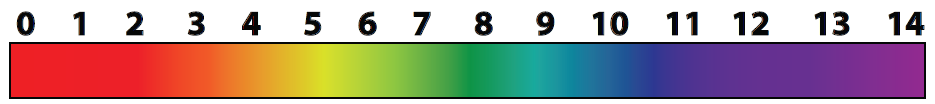

Type your answers to the questions in the fields provided.
Use the formatting box on the left to write chemical formula correctly. (The correct size and position of numbers is important — you will lose marks in exams if you get them wrong.) Either type the formula (H2O), select the number and click on the Xn button to turn it into a subscript (H2O), or click on the required button before typing the character.
After you have answered the questions, click the Show answer button and mark your work by clicking the tick boxes that match your answers. When you have marked all the questions, click the Submit button to send your score to Moodle.
It is possible for you to click all the boxes and give yourself a score of 100%, even when you could not answer the questions correctly. If you do this though, your teacher will think you understand and you will not get the help you need.
3F 2 Acid, base or neutral?
The diagram below shows the colours of full-range universal indicator solution at different pHs.

Use the table to answer the questions below.
Substance
pH
Substance
pH
Apple juice
3.1
Milk of Magnesia
10.5
Baking soda solution
8.3
Oven cleaner
13.2
Battery acid
0.2
Sea water
7.9
Butter
6.3
Tomato juice
4.4
Coffee
5.0
Toothpaste
9.9
Cow’s milk
6.5
Window cleaner
9.5
Laundry detergent
12.4
Wine
3.6
Lemon juice
2.3
Vomit
1.8
Which of the substances in the table is the most basic?
oven cleaner
Which of the substances listed is the closest to neutral?
cow's milk
What colour would universal indicator solution be in:
sea water?
green/blue OR pale blue
laundry detergent?
purple
What colour would litmus be in apple juice?
Red
The sting from stinging nettles (a common garden weed) is made by formic acid. Suggest a substance from the table that would safely neutralise this sting.
Baking soda (Accept milk of magnesia, toothpaste, window cleaner, sea water.)
It is recommended that a fire ant sting be treated with vinegar. What does that tell you about the sting?
The sting must be basic.
An advertisement for a particular brand of window cleaner claims that: it is a super concentrated neutral cleaner; it has a pH of 8.3; and that it will not irritate the hands. Discuss these claims.
A neutral solution would have a pH of 7, so this cleaner is not neutral. However, its pH of 8.3 much closer to neutral than the window cleaner in the table, and equal to that of baking soda which is safe to touch and eat. It is not likely to irritate skin. Recognises that the cleaner is not neutral.
Compares pH of 8.3 with other substances to show the significance of the number.
States that the cleaner is not likely to irritate skin.


![]()
![]()